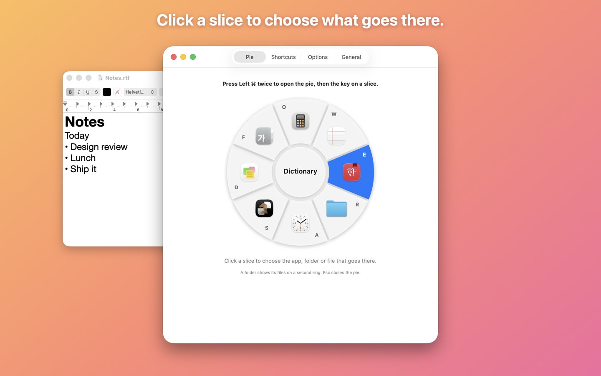

Command twice. Then one key.
Press Command twice and a pie of your favorite apps opens under the pointer. Press Q, W, E, R, A, S, D or F and the app is in front. One hand, two beats, no looking for icons.
macOS 14 or later · Apple silicon and Intel
How it works
Press Command twice
Two quick taps of the left Command key open the pie where your pointer is. Holding the key, or using it in a shortcut like ⌘C, never opens it.
Press the key on a slice
Eight slices, eight keys under your left hand: Q W E R and A S D F. The app comes to the front. Press the same key again and it hides.
Folders open once more
Put a folder on a slice and its files appear on a second ring. One more key opens the file.
Set up in a minute
The first time, the pie is filled with the apps you are using. In Settings you see the pie itself: click a slice and choose what goes there. Apps that are running are listed first.

Any app, a shortcut of its own
Besides the pie, any app can have its own global shortcut. ShortcutManager tells you when it collides with a macOS shortcut or with another of your apps. Shortcuts from ShortcutManager 1.0 are carried over.
Free, and one purchase
- Free: three slices of the pie (Q, W, E) and one shortcut of your own.
- One purchase, once, unlocks all eight slices and as many shortcuts as you like.
- No subscription. No account.
Private by design
The app asks for no permission at all: no Accessibility, no Input Monitoring, no Screen Recording. What is on your pie stays on your Mac.